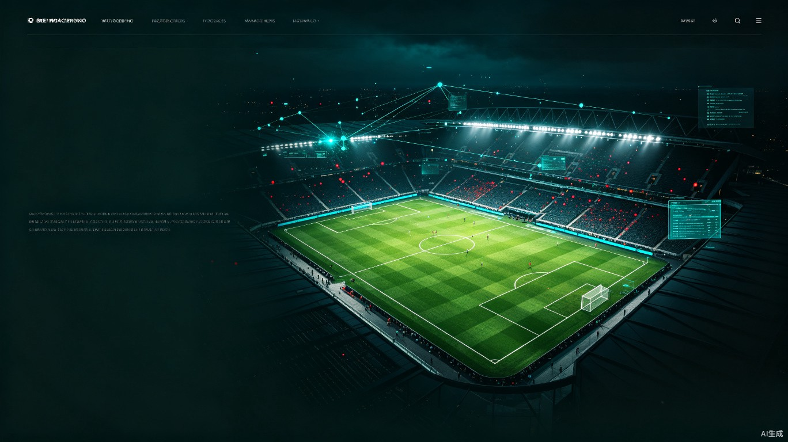

为现代足球俱乐部打造的数智化中枢
不再是被动的报表工具，而是贯穿战略、训练、比赛、康复全链路的决策伙伴。三大核心价值，重塑俱乐部运营底座。
数据驱动决策
用统一数据底座替代经验直觉，让每一次首发、换人、训练计划都有据可依。从主席到教练，共享同一套可信指标。
全角色协同
主席、总经理、教练、球员、医疗、数据……八种角色同一平台协作，信息零时差流转。指令下发与执行反馈在同一张数据网上闭环。
AI 智能参谋
九大 AI 智能体覆盖赛前预测、赛中建议、赛后复盘，把专家经验沉淀为可复用能力。模型持续学习俱乐部自身数据，越用越懂你。
三端协同 · 一体化数据中枢
管理端、教练端、球员端三入口共享同一数据中台，采集、计算、决策在同一张数据网上完成，杜绝信息孤岛与口径分歧。
- 战略仪表盘与 KPI
- 财务与人事全局
- 青训体系与梯队
- 商务运营与合规
- 战术布置与阵型
- 训练计划与负荷
- 实时数据看板
- 视频回看与标注
- 个人数据与雷达
- 训练任务执行
- 健康自报与反馈
- 战术指令接收
三端数据在此汇聚、清洗、建模，向下游 AI 引擎与应用层统一供给。一套指标口径，一份可信数据资产。
八大角色 · 各司其职
每个角色拥有专属工作台，看见自己关心的数据，执行自己负责的决策。权限隔离，信息贯通。
俱乐部主席
战略决策与资源统筹，把控俱乐部全局方向。
总经理
运营全局与商业落地，确保预算与执行对齐。
主教练
战术与比赛决策，掌控阵容与临场调度。
助理教练
训练执行与协助，落实计划并跟踪球员状态。
球员
个人表现与执行，专注自身状态与任务。
青训主管
梯队建设与选拔，追踪年轻球员成长曲线。
医疗康复
伤病管理与康复，保障球员健康与出场可用。
数据分析
数据洞察与建模，把数据转化为可执行建议。
所见即所战 · 沉浸式战术看板
教练端核心工作台。可视化阵型布置、实时球员评分与 AI 战术建议同屏呈现，临场决策一屏即达。
建议 65 分钟用 11 号换下体能下降的 7 号，保持右路冲击力；中场 8 号回撤加强防守覆盖。
AI 参谋 · 九大智能能力
九大智能体覆盖赛前、赛中、赛后全周期，把专家经验沉淀为可复用模型。青色信号代表数据与智能在持续运转。
赛事预测
基于历史交锋与实时状态，预测比赛走势与胜负概率。
阵容推荐
综合对手、体能、伤停，给出最优首发与替补方案。
伤病预警
监控训练负荷与生理指标，提前识别伤病风险。
训练负荷
动态调整训练强度，平衡竞技状态与疲劳恢复。
对手分析
解构对手战术习惯与关键球员，输出针对性策略。
战术建议
实时给出换人、阵型调整、定位球方案建议。
球员评估
多维雷达评估球员能力与潜力，辅助转会决策。
数据归因
自动归因比赛胜负关键因素，定位改进方向。
复盘报告
赛后自动生成结构化复盘报告与行动清单。
六层技术架构 · 从感知到决策
自下而上的六层架构，从球场边的传感器到顶层的决策智能体，每一层都可独立演进、可被替换。
三期实施 · 渐进式数智化演进
从看得见数据，到用得上智能，再到能闭环决策。十二个月内分三阶段落地，每阶段都有可验证的交付物与指标。
数据看得见
完成数据采集接入与角色工作台 MVP，打通单端试运行，建立统一指标口径。
数据用得上
AI 能力分批上线，三端协同打通，战术看板进入日常使用，教练决策开始有据可依。
数据能决策
决策智能体上线，全链路归因与自动化复盘跑通，从感知到决策形成完整闭环。